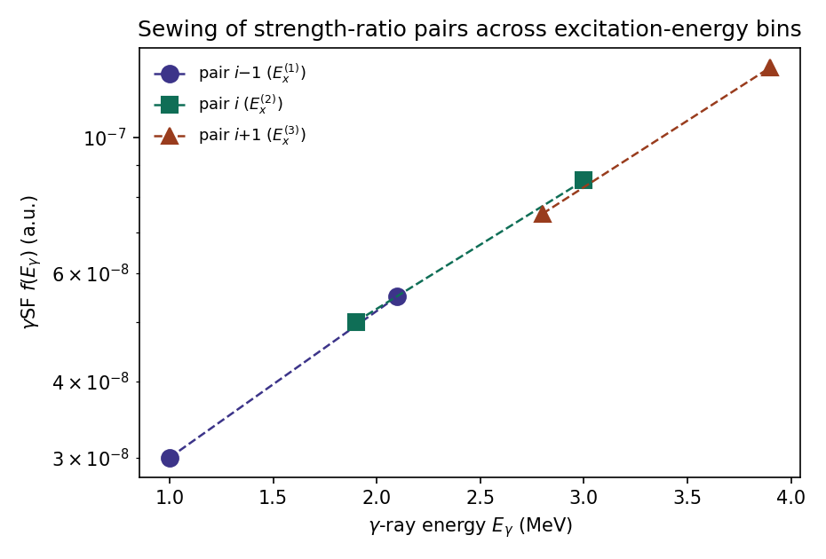

The algorithm¶
New to the Shape method?
This page assumes you're already familiar with the ratio method itself. If not, start with The basics on the home page — it walks through the same equation below using a simple level-scheme picture with every symbol labeled.
Strength ratios from primary transitions¶
Primary γ rays de-exciting the quasicontinuum into a low-lying final level \(L_j\) appear in the (Eγ, Ex) matrix as a diagonal, since \(E_x = E_\gamma + E_{Lj}\) (see From decay scheme to matrix). ShapeIt selects two such diagonals, \(L_1\) and \(L_2\) — in even–even nuclei conveniently the first two \(2^+\) states. For a given excitation-energy bin, the number of counts integrated along each diagonal is proportional to \(f(E_\gamma)\,E_\gamma^3\) times population- and spin-dependent factors that are common to both diagonals and cancel in the ratio
| Symbol | Meaning |
|---|---|
| \(E_x\) | Excitation energy of the current bin |
| \(E_{L1}\), \(E_{L2}\) | Energies of the two chosen final levels |
| \(N_{L1}(E_x)\), \(N_{L2}(E_x)\) | Integrated (or fitted) peak intensities at \(E_{L1}\), \(E_{L2}\) for this bin |
| \(f(E_\gamma)\) | The γSF at γ-ray energy \(E_\gamma\) |
so that each excitation-energy bin yields a pair of internally normalized γSF data points at \(E_\gamma^{(1)} = E_x - E_{L1}\) and \(E_\gamma^{(2)} = E_x - E_{L2}\).
Rather than using the nominal γ-ray energy of each level, ShapeIt assigns to each point the γSF-weighted centroid of its diagonal projection, evaluated over the integration window:
where \(\bar E_\gamma^{(j)}\) is the plotted abscissa for level \(j\)'s point in this bin, and the sums run over γ-ray energy channels within the peak's integration window — this keeps the plotted abscissa consistent with the strength actually contained in the projection, rather than an arbitrary bin centre.
Peak fitting¶
For a given excitation-energy bin, ShapeIt projects onto the internal
\((E_x-E_\gamma)\) axis (see Defining the two levels)
and locates the two peaks at \(E_{L1}\) and \(E_{L2}\). In Autofit mode,
each peak is fit with a Gaussian on a background (a quadratic form is
available; the background parameters are first determined from the two
flanking regions alone, then held fixed while the peak amplitude, centroid,
and width are optimized in the peak region). A level can optionally be fit
as a doublet — a second Gaussian is added to account for a close-lying
contaminant, such as a first-escape peak located 511 keV away from the
main peak (from pair-production escape). The two components share the same
width; only the second component's amplitude and centroid are independently
fit. Doublet windows are configured per level via the settings file
(level1_2 / level2_2 — see Settings files) rather
than the main control panel.
A bin is discarded if either peak area falls below the Min. Counts threshold, protecting the ratio \(R\) against bins where a peak is not statistically significant above background.
The peak width can be left free, or constrained to an excitation-energy-dependent calibration \(\sigma(E_\gamma) = p_0 + p_1 E_\gamma\) (with \(\sigma\) the Gaussian width and \(p_0\), \(p_1\) fit constants) determined beforehand from well-populated bins — this stabilizes fits in bins with low statistics while preserving the natural growth of peak width with γ-ray energy.
Symmetric sewing¶
Equation for \(R\) above fixes the two points of a pair relative to each other, but not the absolute scale of the pair. ShapeIt connects successive pairs into one continuous curve via symmetric sewing.

Figure — Three strength-ratio pairs from three excitation-energy bins. Each pair (dashed line) is rescaled so that neighbouring pairs agree with each other in their region of overlap, building up the γSF shape bin by bin.
Let pair \(i\) consist of the higher-energy point \((E_\gamma^{(1),i}, f_1^i)\) and the lower-energy point \((E_\gamma^{(2),i}, f_2^i)\), with slope
When attaching pair \(i\) to the preceding pair \(i-1\), both points of pair \(i\) are multiplied by the common rescaling factor
| Symbol | Meaning |
|---|---|
| \(E_\gamma^{(1),i}\), \(f_1^i\) | γ-ray energy and γSF value of pair \(i\)'s higher-energy point (from \(L_1\)) |
| \(E_\gamma^{(2),i}\), \(f_2^i\) | γ-ray energy and γSF value of pair \(i\)'s lower-energy point (from \(L_2\)) |
| \(s_i\) | Slope of the line joining pair \(i\)'s two points |
| \(c_i\) | Rescaling factor applied to both points of pair \(i\) when attaching it to pair \(i-1\) |
This is exactly the condition that the linear extrapolations of pair \(i-1\) and of the rescaled pair \(i\) agree at the energy midway between their adjoining endpoints — the vertical offsets of the two interpolating lines to their crossing point are equal in magnitude, which gives the method its name. Because both pairs are referred to a common midpoint (rather than one pair being pinned to an endpoint of the other), the rescaling is independent of the direction of the chain — the sewn shape no longer depends on which bin the interpolation starts from, unlike the conventional sewing prescription. The procedure fixes only the shape of the γSF; the overall scale is set afterwards by a χ² comparison against the Oslo-method result (see Monte Carlo uncertainty).
Sliding-window and bin-size scans¶
Two deterministic scans test the sensitivity of the sewn shape to the excitation-energy binning:
- Sliding-window scan — the excitation-energy grid is repeated with its lower edge displaced towards lower energies in \(k_{max}-1\) steps of \(\Delta E_x/(k_{max}-1)\), with \(k_{max}=5\), while the upper edge stays fixed. Each shifted realization is normalized to the first (unshifted) one via a χ² fit.
- Bin-size scan — the bin width \(\Delta E_x\) is increased from a user-specified minimum to a maximum in fixed steps of 50 keV, each realization again normalized to the first via a χ² fit.
The two can be combined (bin-size as the outer loop, sliding-window repeated for each bin size). The resulting realizations can be inspected individually ("Show gSF single data") or pooled into a coarser grid reporting the mean and standard deviation per bin ("Show gSF average") — the latter is what feeds into the slope determination.
Monte Carlo uncertainty on the slope correction¶
The scans above are qualitative, deterministic checks. To turn them into a quantitative uncertainty on the slope correction \(\alpha\), ShapeIt instead randomizes the bin width, the lower excitation-energy edge, the peak areas (resampled from a Gaussian using their fit uncertainty), and the comparison (literature) γSF data (resampled within their quoted uncertainty), then repeats the full extraction many times, recording the best-fit \(\alpha\) from a χ² comparison against the (resampled) Oslo-method curve in each iteration. The resulting distribution of best-fit \(\alpha\) values is close to Gaussian; its mean and standard deviation are taken as the slope correction \(\delta\alpha\) and its 1σ uncertainty. See Monte Carlo uncertainty and absolute level density for how to run this in the GUI.
References¶
If you use ShapeIt in a publication, please cite:
- D. Mücher et al., Extracting model-independent nuclear level densities away from stability, Phys. Rev. C 107 (2023) L011602. doi:10.1103/PhysRevC.107.L011602
The Shape method itself was introduced in:
- M. Wiedeking et al., Independent normalization for γ-ray strength functions: The shape method, Phys. Rev. C 104 (2021) 014311. doi:10.1103/PhysRevC.104.014311